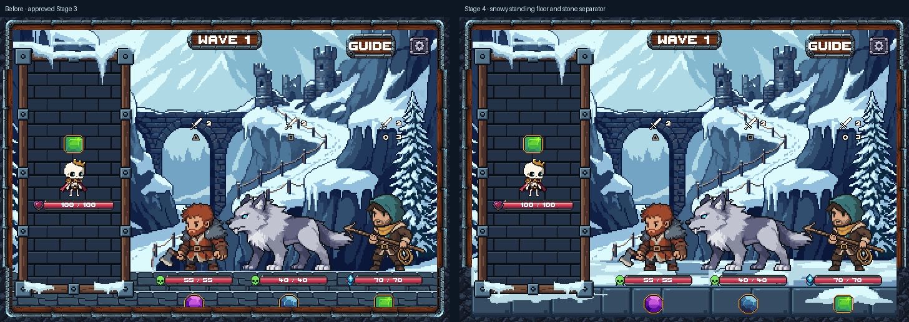
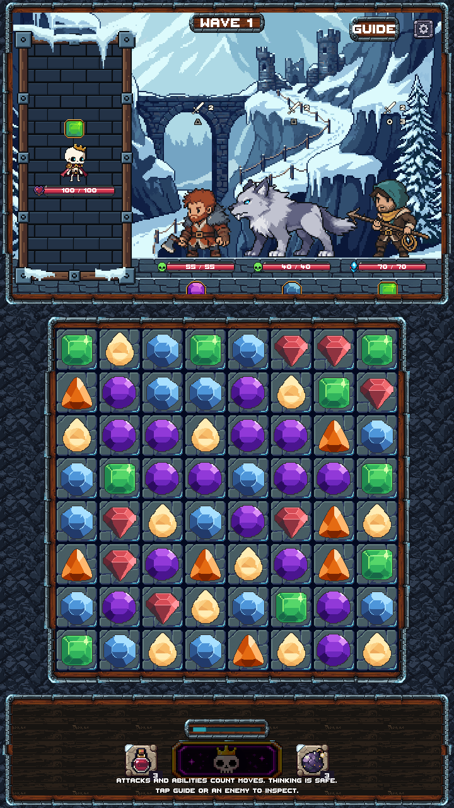
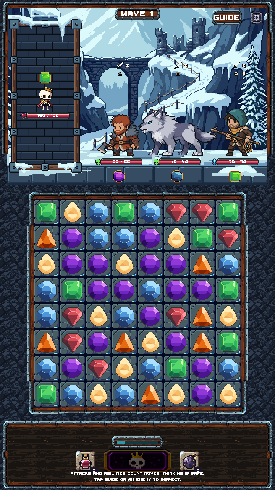
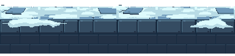

Snowy Mountain · Stage 4
Snowy standing floor and stone separator. Actual Unity Game-scene review with Rattlebones and three Frostwake enemies.
9 native modules7 opaque colors · binary alpha10 PixelLab generationsNo merge · awaiting review
Before and after
The standing line, health bars, portrait bounds, board and controls are unchanged. The new snowy surface sits above a complete darker stone front face.

Full Unity captures
Before — approved Stage 3
Stage 4 — new floor and separator
Preview only. The legacy outer enclosure, board materials and bottom HUD remain pending their stages. The existing 360×640 camera warning and crowded labels remain visible. These are Unity Editor captures; no phone testing is claimed.
PixelLab source
One text-only 320×96 Pro generation. No mockup or golden reference uploaded. Raw source is preserved. LibreSprite completed its cropped lower blocks and prepared repeatable pieces.

Native assembled strip
1× native preview, then 3× nearest-neighbor. The Unity assembly repeats these separate modules; this strip is review evidence, not a flattened scene asset.

Individual modules
Each card shows 1× and 3×. Editable LibreSprite sources reopen with exact export pixels.
Verification
Unity compilation and the floor review passed across all five viewports. Shared geometry is identical before/after. The complete separator fits above the board, and new sprite texels render uniformly at integer scale. Screenshot differences stay within the floor and replaced lower rail.
8,974 protected files retain their starting hashes, including approved art and preexisting edits. Stage 4 used 10 generations; 4,930 remain. Stop here for review.
Handoff notes · Native QA · Unity checks · Pixel comparison · Generation receipt